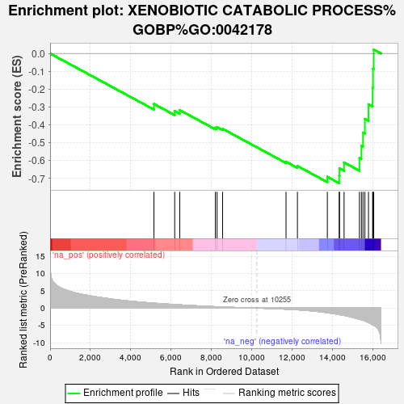

| | | Dataset | CD_deg |
| Phenotype | NoPhenotypeAvailable |
| Upregulated in class | na_neg |
| GeneSet | XENOBIOTIC CATABOLIC PROCESS%GOBP%GO:0042178 |
| Enrichment Score (ES) | -0.72620106 |
| Normalized Enrichment Score (NES) | -2.1342764 |
| Nominal p-value | 0.0 |
| FDR q-value | 0.0065610064 |
| FWER p-Value | 0.072 |
Table: GSEA Results Summary

Fig 1: Enrichment plot: XENOBIOTIC CATABOLIC PROCESS%GOBP%GO:0042178
Profile of the Running ES Score & Positions of GeneSet Members on the Rank Ordered List
Fig 2: XENOBIOTIC CATABOLIC PROCESS%GOBP%GO:0042178: Random ES distribution
Gene set null distribution of ES for XENOBIOTIC CATABOLIC PROCESS%GOBP%GO:0042178